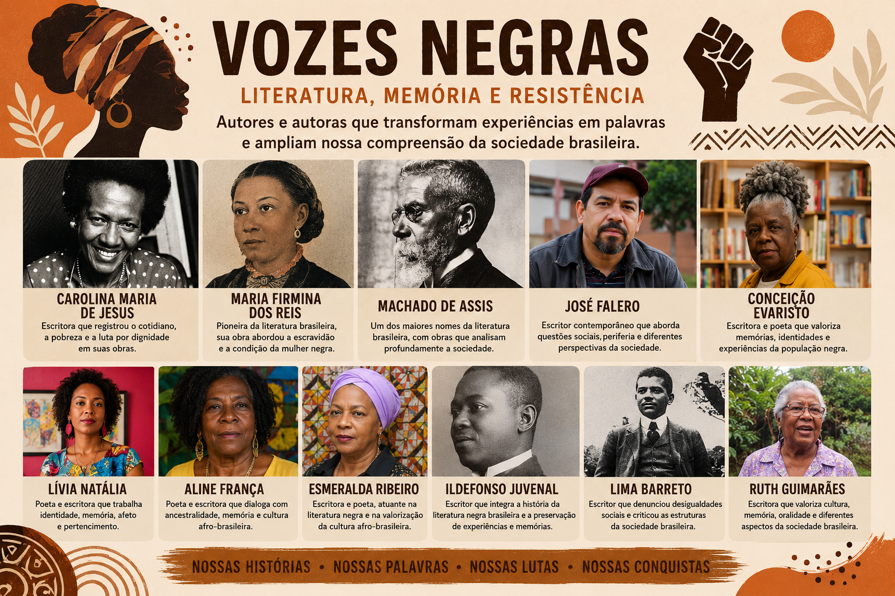

Carolina Maria de Jesus
Escritora brasileira conhecida por registrar experiências de vida, desigualdade social, pobreza, cotidiano e resistência.
Memória, identidade, resistência e representatividade

Durante o itinerário formativo Literatura e Sociedade, estudamos diferentes escritores e escritoras negras brasileiras, observando como suas produções literárias apresentam experiências, memórias, identidades e diferentes formas de compreender a sociedade brasileira.
A literatura também foi compreendida como um espaço de representação e de construção de novas perspectivas, permitindo conhecer histórias que muitas vezes foram silenciadas ou pouco valorizadas na tradição literária.
Ao conhecer diferentes autores e autoras, buscamos ampliar nosso olhar sobre a literatura brasileira e compreender a diversidade de experiências presentes em nossa sociedade.
Escritora brasileira conhecida por registrar experiências de vida, desigualdade social, pobreza, cotidiano e resistência.
Escritora maranhense e importante pioneira da literatura brasileira, cuja produção contribuiu para a representação de questões relacionadas à escravidão e à condição humana.
Um dos principais nomes da literatura brasileira. Sua obra apresenta análises profundas das relações humanas e da sociedade de seu tempo.
Escritor brasileiro cuja produção apresenta críticas às desigualdades sociais, ao racismo e às estruturas da sociedade brasileira.
Escritora e poeta brasileira cuja produção valoriza memória, identidade, ancestralidade e experiências da população negra.
Escritora brasileira cuja obra dialoga com cultura, memória, oralidade e diferentes aspectos da sociedade brasileira.
Poeta e escritora brasileira cuja produção dialoga com identidade, memória, afetividade e pertencimento.
Escritora e poeta brasileira ligada à literatura negra, contribuindo para a valorização da identidade e da representação da população negra.
Escritor brasileiro contemporâneo cuja produção aborda experiências sociais, desigualdade, periferia e diferentes perspectivas sobre a sociedade brasileira.
Escritora e poeta brasileira cuja produção dialoga com identidade, memória, ancestralidade e cultura afro-brasileira.
Escritor brasileiro cuja trajetória integra a história da literatura negra brasileira e contribui para a preservação de diferentes experiências e memórias.
A discussão sobre as questões raciais também foi relacionada à leitura e análise do poema “Homem Livre”, de Carlos Drummond de Andrade.
A partir da leitura, refletimos sobre o significado da liberdade e sobre as contradições existentes entre a ideia de ser livre e as desigualdades presentes na sociedade.
O poema possibilitou estabelecer relações entre literatura e sociedade, observando como a produção literária pode provocar questionamentos sobre condições sociais, relações de poder, liberdade e dignidade humana.
O que significa ser verdadeiramente livre em uma sociedade marcada por desigualdades?
Conhecer diferentes escritores e escritoras negras permite perceber que a literatura brasileira é formada por múltiplas vozes e experiências.
Essas produções contribuem para ampliar a representatividade e possibilitam que diferentes sujeitos sociais ocupem espaços de fala, memória e criação literária.
Dessa forma, estudar literatura também significa refletir sobre quem teve sua voz registrada, quem foi silenciado e como a sociedade pode construir novas formas de representação.
Como a presença de diferentes vozes na literatura pode transformar nossa maneira de compreender a sociedade brasileira?
O estudo das vozes negras permitiu compreender que a literatura não está separada da sociedade. Os textos literários podem registrar experiências, preservar memórias, denunciar desigualdades e construir novas possibilidades de representação.
Ao relacionar os autores estudados com o poema de Carlos Drummond de Andrade, ampliamos a discussão sobre liberdade, identidade, memória, representação e as relações sociais presentes no Brasil.